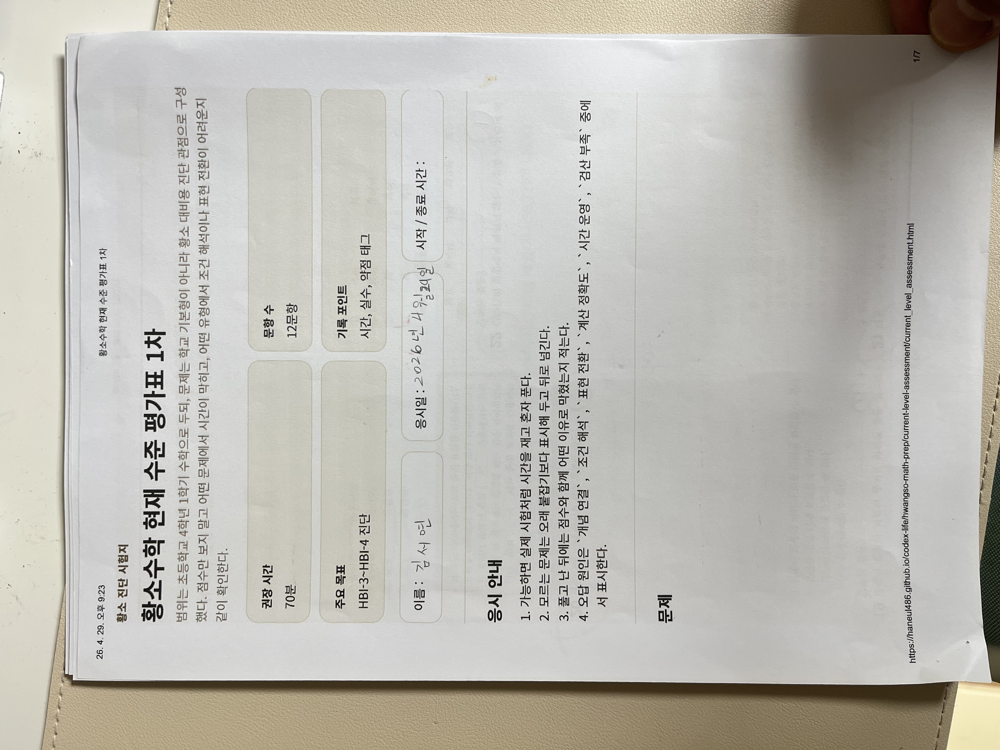
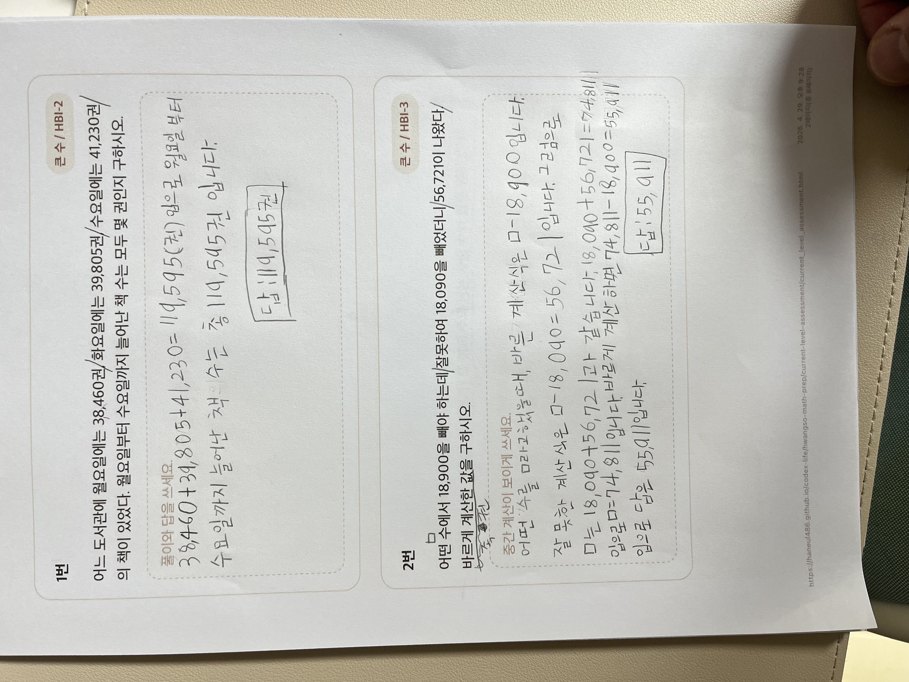
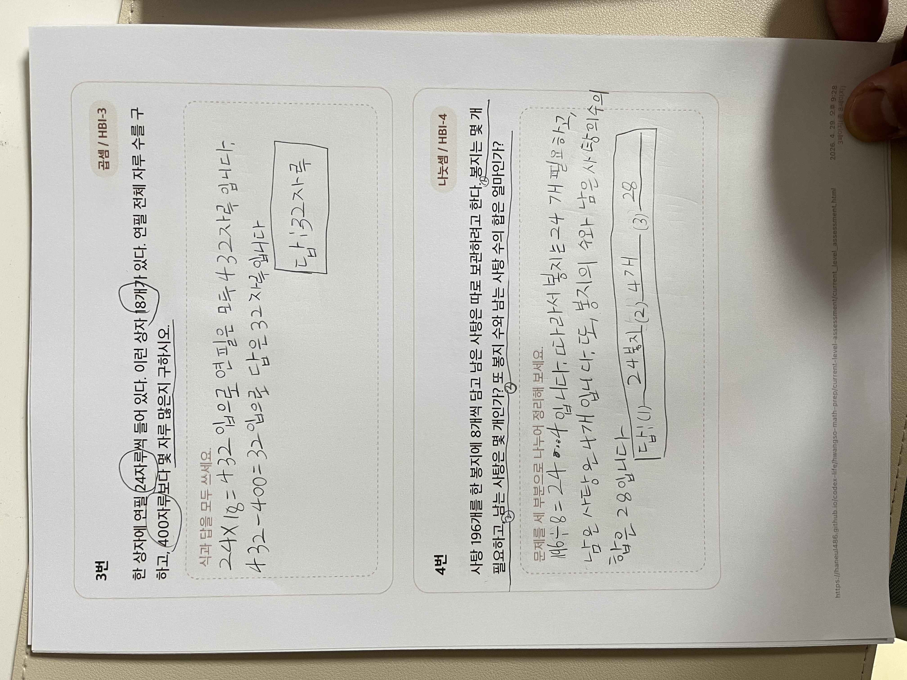
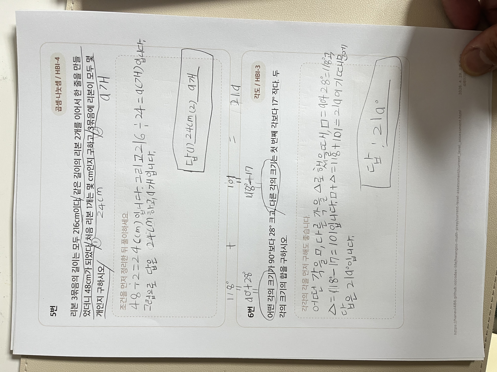
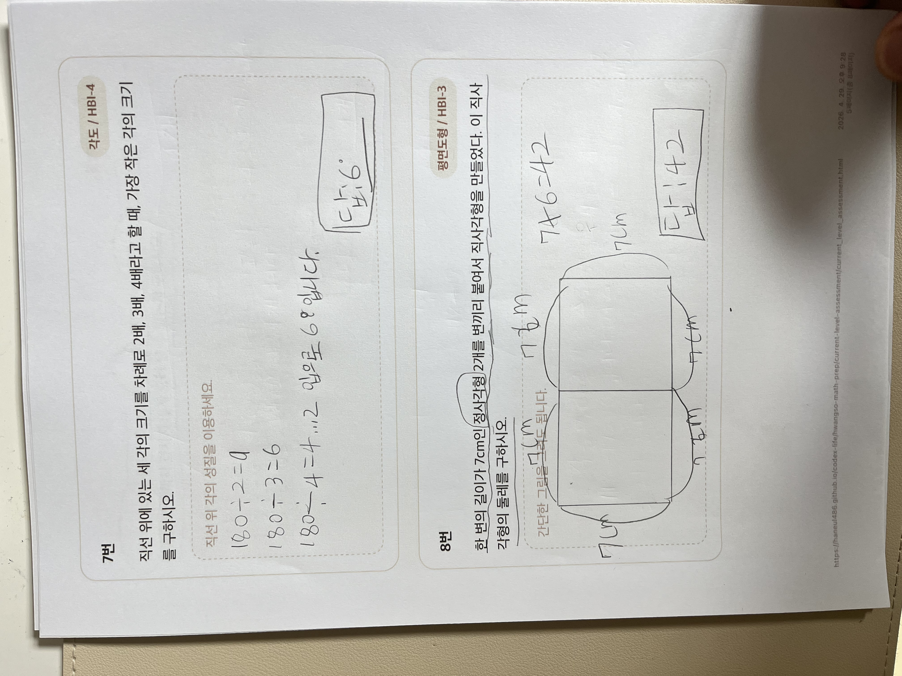
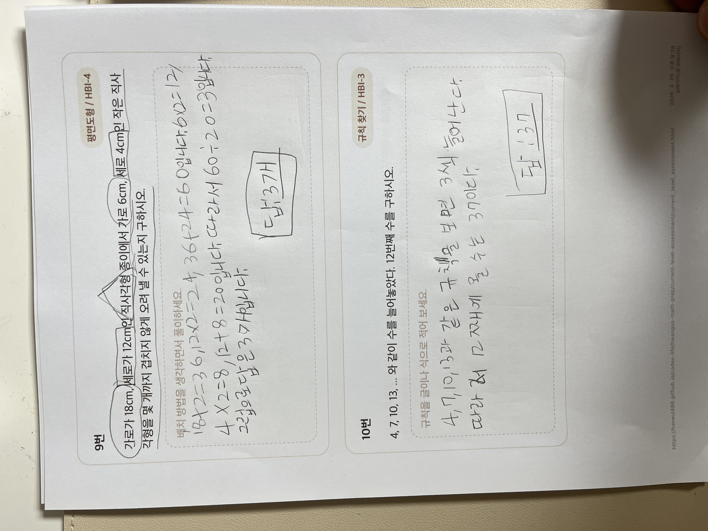
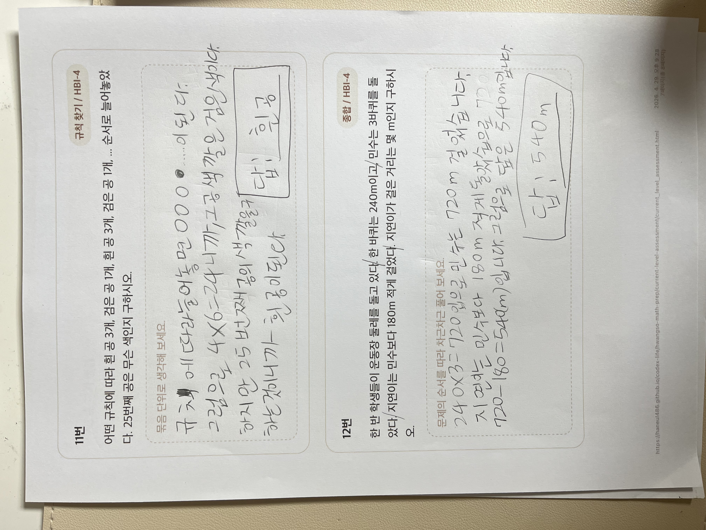

결과 리뷰
첫 번째 현재 수준 평가 결과
제출한 사진을 기준으로 실제 풀이 흔적을 읽어 채점하고, 황소수학 대비 관점에서 어디가 강하고 어디서 막혔는지 정리한 결과 문서입니다. 이번 평가는 `점수`보다 `문제 요구를 읽는 힘`, `표현 전환`, `HBI-4 구조 문제 대응력`을 확인하는 데 의미가 있습니다.
응시 기록
1차 평가 완료
사진 제출본 기준 리뷰일 `2026-04-29`
총점
8 / 12
정답률 약 `66.7%`
현재 판정
HBI-3 안정
HBI-4 진입 단계, 구조 파악 보강 필요
핵심 우선순위
조건 해석
문항 요구 분리, 표현 전환, 비정형 구조 대응
최종 판정 요약
범위: 초4-1
강점: 계산 정확도
약점: 조건 해석
| 판정 항목 | 결과 |
|---|---|
| 현재 주력 구간 | `HBI-3` 문제는 비교적 안정적으로 처리함 |
| 상위 진입 상태 | `HBI-4` 문제에서 구조가 보이면 풀지만, 처음 보는 방식에서는 흔들림 |
| 계산력 | 기본 계산 실수는 많지 않고, 여러 단계 계산도 끝까지 이어 가는 편 |
| 실전 약점 | 무엇을 구하라는지 정확히 분리하는 힘, 그림/배치를 식으로 바꾸는 힘이 부족함 |
이번 평가에서 보인 특징
- `1번`처럼 계산은 가능해도 질문의 대상이 `전체 합`인지 `증가량`인지 구분하는 단계에서 오답이 났습니다.
- `3번`은 계산 방향은 맞았지만 문제에서 두 개를 물었는데 한쪽 답을 완성하지 못했습니다.
- `7번`, `9번`은 황소형으로 자주 나오는 `표현 전환 + 구조 파악` 문제라서, 지금 단계의 핵심 약점을 보여 줍니다.
- `2번`, `4번`, `6번`, `10번`, `12번`은 여러 단계 계산과 규칙 처리 능력이 충분히 있다는 신호입니다.
이번 평가는 `기본기가 약한 상태`가 아니라, `기본기는 있는데 황소 스타일의 문항 요구 해석이 아직 덜 자동화된 상태`로 보는 것이 가장 정확합니다.
문항별 채점 결과
| 문항 | 판정 | 학생 답안 | 정답 | 핵심 해설 | 약점 태그 |
|---|---|---|---|---|---|
| 1 | 오답 | 119,495권 | 2,770권 | 월~수 전체 합이 아니라 월요일에서 수요일까지 `얼마나 늘었는지`를 구해야 했습니다. | 조건 해석 |
| 2 | 정답 | 55,911 | 55,911 | 잘못 계산한 값과 바르게 계산한 값의 차이를 끝까지 반영했습니다. | 개념 연결 |
| 3 | 부분 오답 | 32자루 | 432자루, 32자루 많음 | 곱셈 계산은 맞았지만 첫 번째 질문의 답을 완성하지 못했습니다. | 문항 요구 분리 |
| 4 | 정답 | 24봉지, 4개, 28 | 24봉지, 4개 남음, 합 28 | 몫, 나머지, 합을 구분해 순서대로 잘 처리했습니다. | 조건 해석 |
| 5 | 정답 | 24cm, 9개 | 24cm, 9개 | 연결 조건을 먼저 길이로 바꾼 뒤 전체 개수로 이어 갔습니다. | 개념 연결 |
| 6 | 정답 | 191도 | 191도 | 중간 각을 먼저 구하고 마지막 합을 처리하는 흐름이 안정적이었습니다. | 계산 정확도 |
| 7 | 오답 | 68도 | 20도 | `180도`를 `2:3:4`로 나누는 구조를 잡지 못하고 각을 따로 나누었습니다. | 표현 전환 |
| 8 | 정답 | 42cm | 42cm | 도형을 다시 그려 직사각형 크기로 바꾼 점이 좋았습니다. | 표현 전환 |
| 9 | 오답 | 3개 | 9개 | 넓이 계산만으로 접근해 `가로 3개 × 세로 3개` 배치 구조를 놓쳤습니다. | 비정형 구조 파악 |
| 10 | 정답 | 37 | 37 | 공차 3의 규칙을 끝항까지 안정적으로 이어 갔습니다. | 규칙 해석 |
| 11 | 정답 | 흰 공 | 흰 공 | 반복 묶음을 먼저 찾는 방식이 정확했습니다. | 경우 나누기 |
| 12 | 정답 | 540m | 540m | 세 배 확장 후 남는 길이를 빼는 종합 흐름을 잘 처리했습니다. | 개념 연결 |
영역별 상세 분석
강점
- 기본 연산과 여러 단계 계산을 끝까지 밀고 가는 힘이 있습니다.
- 규칙 찾기 기본형과 종합형에서 계산 실수 없이 마무리하는 편입니다.
- 도형도 구조가 보이면 다시 그리거나 수치를 옮겨 적는 습관이 보입니다.
약점
- 문제가 `몇 개의 답`을 요구하는지 처음에 분리하는 습관이 약합니다.
- 문장을 구조로 바꾸는 단계가 늦어지면, 쉬운 계산을 해도 오답으로 이어집니다.
- HBI-4 성격의 낯선 문제에서 넓이, 길이, 비율을 어떤 표현으로 잡아야 할지 잠깐 멈춥니다.
| 분석 축 | 현재 상태 | 이번 시험 근거 |
|---|---|---|
| 개념 결합도 | 보통 이상 | 2번, 5번, 12번에서 조건을 계산 흐름으로 연결했습니다. |
| 추론 단계 수 | 보통 이상 | 4번, 6번, 10번처럼 2~3단계 풀이를 안정적으로 이어 갔습니다. |
| 표현 전환도 | 불안정 | 8번은 성공했지만 7번, 9번에서는 표현을 바꾸는 순간이 늦었습니다. |
| 계산 정확도 부담 | 안정적 | 실수로 틀린 문항보다 구조를 잘못 잡아 틀린 문항이 더 많았습니다. |
| 비정형성 대응 | 보강 필요 | 처음 보는 질문 방식에서 무엇을 먼저 잡아야 할지 흔들렸습니다. |
| 시간 압박 대응 | 추가 확인 필요 | 사진만으로는 실제 소요 시간을 알 수 없어, 다음 실전 세트에서 별도 확인이 필요합니다. |
사진별 채점 표시
제출 사진 위에 이 페이지에서 바로 `맞음`, `틀림`, `혼합` 표시를 얹었습니다. `혼합`은 한 장 안에 정답 문항과 오답 문항이 함께 있는 경우입니다.
IMG_8115 · 1번 ~ 2번
1번 틀림 · 2번 맞음

IMG_8116 · 3번 ~ 4번
3번 부분 오답 · 4번 맞음

IMG_8117 · 5번 ~ 6번
두 문항 모두 맞음

IMG_8118 · 7번
틀림

IMG_8119 · 8번 ~ 9번
8번 맞음 · 9번 틀림

IMG_8120 · 10번 ~ 11번
두 문항 모두 맞음

IMG_8121 · 12번
맞음

다음 학습 우선순위
| 우선순위 | 학습 목표 | 왜 필요한가 | 바로 할 연습 |
|---|---|---|---|
| 1 | 문항 요구 분리 | 한 문제에서 몇 가지를 묻는지 놓치면 맞는 계산도 오답이 됩니다. | 문제를 읽고 답 개수를 먼저 네모 표시하기 |
| 2 | 표현 전환 훈련 | 각도 비, 배치 개수, 도형 재구성은 식보다 그림이나 배열로 먼저 잡아야 빨라집니다. | 직선 위 각, 타일 배치, 직사각형 재구성 문제만 따로 6문항 풀기 |
| 3 | HBI-4 구조 적응 | 지금은 계산보다 비정형 문제의 첫 진입이 느려서 상위 구간에서 점수가 빠집니다. | 정답 맞히기보다 `왜 이 표현으로 바꾸는지` 말하면서 풀기 |